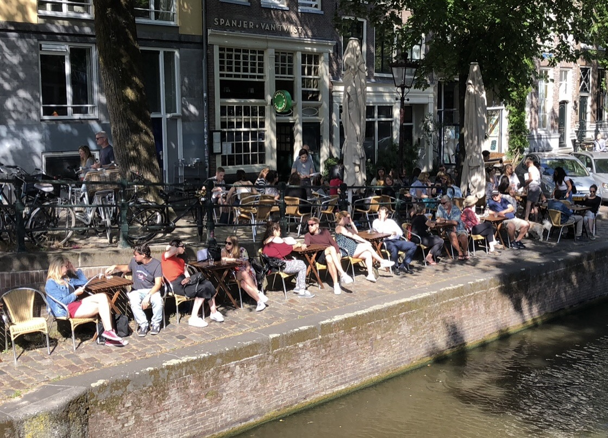
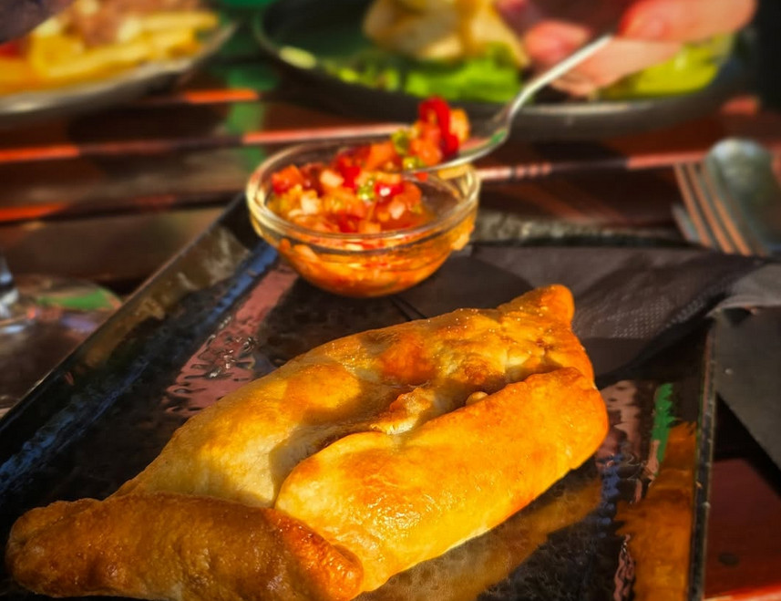
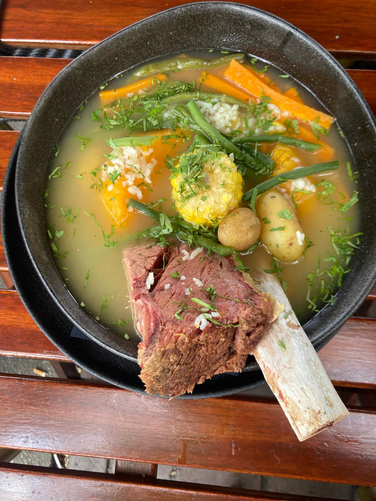
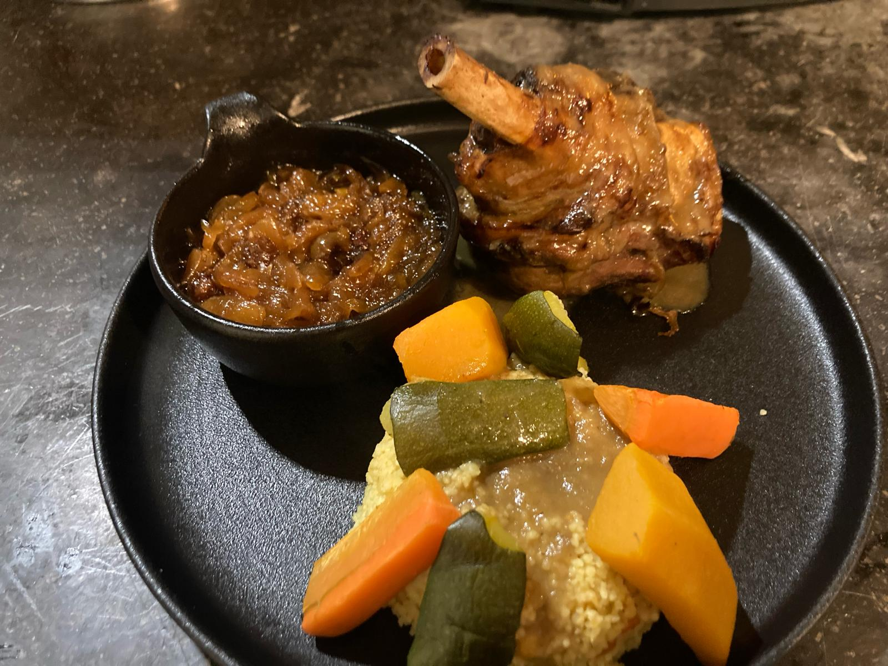
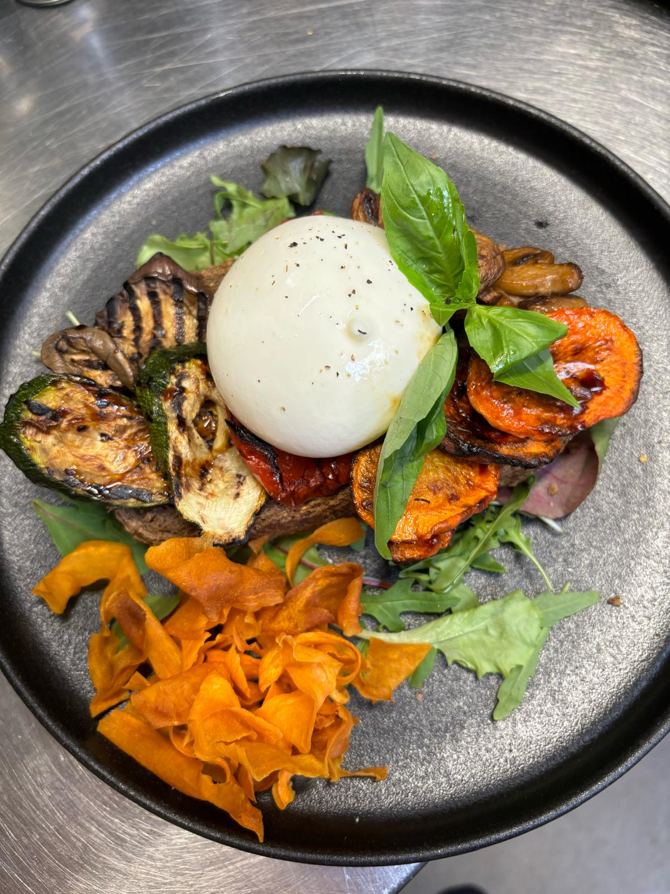
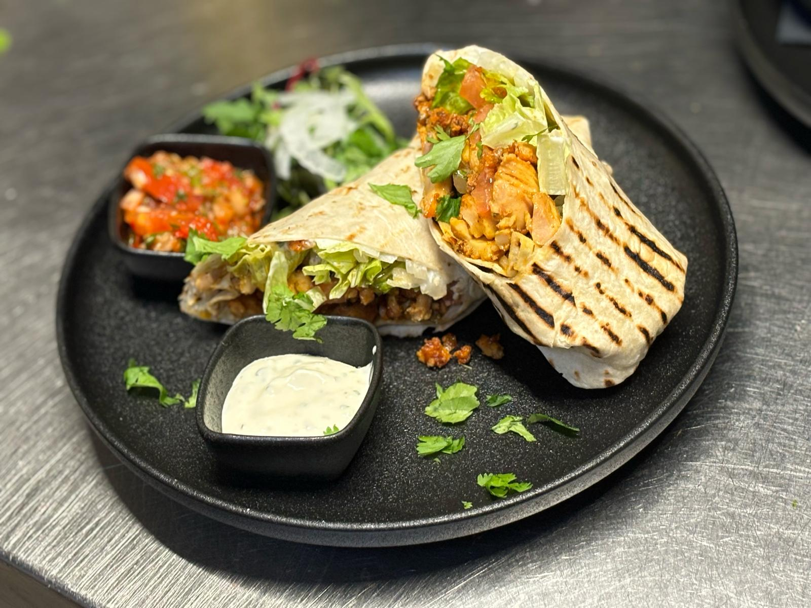
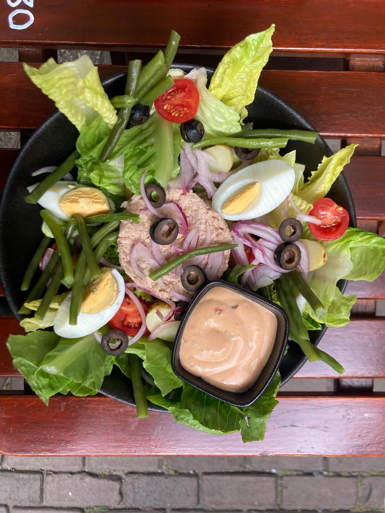
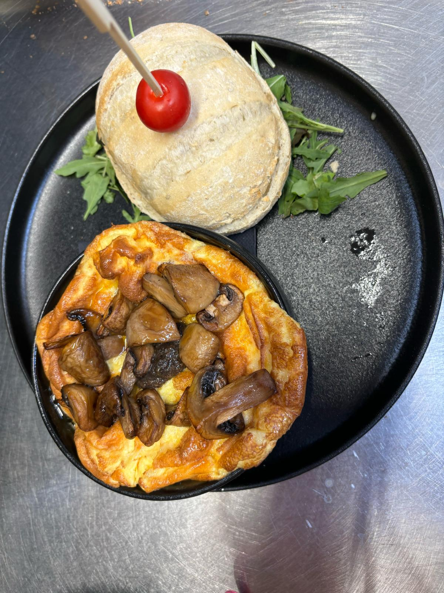
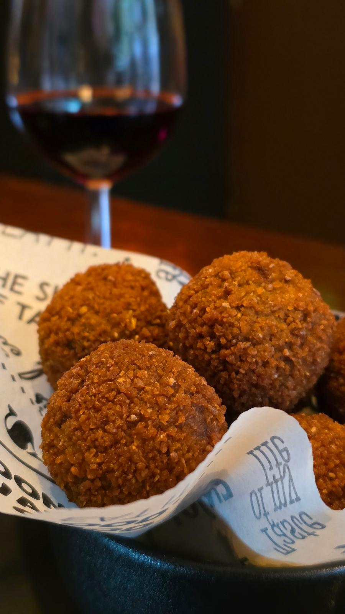

Leliegracht 60, Amsterdam
Una cálida bienvenida
Wij heten je graag welkom bij onze sfeervolle restobar, waar de smaken van de Chileense keuken tot leven komen! Geniet van een smaakvolle lunch of een uitgebreid diner, en laat je verrassen door onze ambachtelijke cocktails.
Tu rincón chileno aan de gracht
Gelegen aan de Leliegracht, om de hoek van de Westerkerk en het Anne Frank Huis, met een mooi en groot terras waar het in de zomer heerlijk vertoeven is.
Bij Spanjer en van Twist kan je heerlijk eten voor een goede prijs met een gezellige en persoonlijke bediening in een gastvrije sfeer. De kaart is gevuld met lekkere en verrassende gerechten en wordt aangepast aan het seizoen. En op het ‘bord’ vind je de dagschotel en andere specials.
Wil je zeker zijn van een tafel? Reserveer dan hier. Kom je zonder reservering? Geen probleem! We helpen je zo snel mogelijk aan een plek.
Esperamos verte pronto, graag tot ziens,
team Spanjer en van Twist


De kaart
Chileense klassiekers en huisspecialiteiten, aangepast aan het seizoen. Op het bord in de zaak staan de dagschotel en andere specials. Alle prijzen in euro.
Chilean and house specialties
Empanada
12,00A cherished family recipe, our oven-baked empanadas filled with a savory mix of seasoned ground beef, onions, egg, sweet raisins, and green olives. Paired with our homemade pebre salsa, fresh cilantro, tomatoes, finely diced onions, minced garlic, and a touch of chili.
Pastel de Choclo
25,50Enjoy the rich flavors of Chilean cuisine: a hearty casserole with layers of beef, chicken, onions, egg, olives, and a crispy corn-basil pie topping. Served with a refreshing tomato salad.
Veggie Pastel de Choclo
26,00Our vegetarian twist on the classic casserole with layers of savory plant-based protein, onions, egg, olives, and a crispy corn-basil pie. Served with a refreshing tomato salad.
Churrasco
22,50A beloved Chilean street food classic: tender beef strips sautéed with garlic, creamy avocado, and tomato slices, topped with mayonnaise. Served with crispy French fries.
Our Famous Costillar
26,50Succulent spareribs marinated in a mildly spicy BBQ sauce, infused with red wine, and rosemary, coated with fresh herbs. Served with fries, corn on the cob, and garlic sauce.
Tender Lambshank
27,00A flavorful Mediterranean lamb dish served with couscous, caramelised onions, chickpeas, and roasted vegetables.
Seafood Risotto
25,00With a fusion of savory fish and white wine broth. This dish features tender squid, plump mussels, calamari, shrimp, and salmon.
Black Angus Burger
22,50The ultimate burger, topped with crisp bacon, cheddar, fresh lettuce, tomato, onion, mustard, and ketchup. Served with a side of crispy fries.
The Vegetarian Butcher Burger
23,00Our savory veggie patty, topped with cheddar cheese, fresh lettuce, tomato, onion, mustard, and ketchup. Served with crispy fries.
Sopas
Rich Fish Soup
18,00A luxurious blend of salmon, shrimp, calamari, and codfish in a creamy broth, accented with a hint of lemon. Served with warm, freshly toasted bread.
Cazuela
26,00Experience the comforting warmth of our traditional Cazuela, a clear soup brimming with succulent beef short rib, pumpkin, baby potatoes, haricots verts, carrots, corn on the cob, and rice.
Sandwiches
Burrata
15,00A mix of vibrant veggies topped with creamy burrata, and balsamic dressing on freshly toasted bread.
Truffle Eggs
15,00Fluffy oven-baked omelet with mushrooms, enriched with truffle and truffle oil.
Fruta de Mar
15,00A mix of seafood with thinly sliced onions, lemon zest, cilantro, and cocktail sauce on toasted bread.
Tuna Melt
14,50A timeless favorite! Homemade tuna salad with capers, red onion, and parsley, topped with tomatoes and cheddar on freshly toasted bread.
Chicken Wrap
17,50A flour tortilla with tender marinated chicken, crisp lettuce, tomatoes and cucumber, all topped with a drizzle of garlic sauce.
Salads
Salmon Tartare
21,00With black sesame marinated salmon, creamy avocado, and seaweed salad. Served with soy ginger sauce and crispy toast.
Beetroot Tartare
16,00With creamy avocado, capers, pearl onions, pickles and bell pepper confit. Served with garlic sauce and crispy toast.
Tuna Salad
21,50A colourful blend of tuna, capers, boiled egg, tomatoes, red onions, olives, crisp haricots verts, and tender baby potatoes.
Grilled Vegetable Salad
22,50With bell peppers, eggplant, zucchini, carrots, and mushrooms, tossed with baby spinach, crispy sweet potato chips, creamy burrata, and balsamic dressing.
Snacks
Crispy Corn Elote Style
14,50Corn paired with Parmesan cheese, and herb butter, topped with a blend of cilantro, smoked chives, finished with a hint of lime.
Chorrillana (for 2)
27,50A hearty Chilean dish: French fries topped with sautéed beef, sausage, caramelised onions, fried egg, and cheese sauce.
Fish and Chips with Piccalilly Sauce
15,00Bread with Herb Butter and Pebre
8,00Bitterballen with Mustard
10,00Vegetarian Bitterballen with Mustard
12,00
Desserts
Leche Asada
9,00Caramel pudding






Drinken
Van pisco sour tot fernet con coca. Voor specifieke whisky’s, likeuren, cognacs en aperitieven: vraag gerust naar onze selectie.
Pisco sour
13,00Lime juice, sugar, egg white, Pisco Espiritu de los Andes
Margarita
13,00Lemon juice, triple sec, tequila
Mojito
13,00Lime, mint, sugar, rum
Caipirinha
13,00Lime, sugar, cachaça
Espresso Martini
13,00Espresso, Kahlúa, vodka
Smokey Mary
12,00Big Tom spiced tomato juice, smoked whiskey
Moscow Mule
12,00Lime, Fever-Tree ginger beer, vodka
Dark & Stormy
12,00Lime, Fever-Tree ginger beer, dark rum
The Classic
12,00Bombay gin, Fever-Tree tonic, lemon
Red G&T
13,00Bombay gin, Fever-Tree elderflower tonic, fresh mint and red fruit
Violet G&T
13,00Black currant Tanqueray gin, Fever-Tree tonic, lemon and blueberries
Green G&T
14,00Hendrick’s gin, Fever-Tree tonic, cucumber, rosemary and lime
Aperol Spritz
11,50Luxardo Limoncello Spritz
13,00Campari Spritz
13,50
Melvin
15,00Melon, white wine, melon juice
Michelada
9,00Corona, lime juice, salt. The cure to a hangover.
Turbo Mate
12,50El Tony mate, vodka
Sangria (1 liter)
30,00Fernet con Coca
10,00Fernet, coca-cola, lime
Salmari
5,50Jägermeister
5,50Limoncello
7,50Jose Cuervo Tequila gold of silver
7,50Patrón Tequila
14,00Sambuca
7,50Jenever jong of oud
4,20Vodka
6,80
Koffie
Coffee (regular) of espresso
3,70Cortado
3,80Cappuccino
4,20Latte
4,50Latte macchiato
4,70Double espresso
5,00Flat white
5,40Iced coffee
5,50Hot chocolate
4,30Add-ons
0,70Oatmilk, syrup, whipped cream, mint, ginger, orange, lemon
Make it boozy
Special coffee
9,50With liquor of choice
Irish coffee
9,50Hot coco & spiced rum
10,00
Thee
Mr. Jones
3,40Verse munt of verse gember
4,80
Wifi in de zaak: Spanjer1015
Reserveren
Wil je zeker zijn van een tafel? Reserveer hier voor binnen. We nemen reserveringen aan tot 21:00.
- Buiten reserveren kan niet
- In verband met de onvoorspelbaarheid van de drukte en het weer nemen wij geen reserveringen aan voor buiten.
- Borrelen kan!
- Je kan altijd binnenlopen om te borrelen, ook zonder reservering. Het personeel bepaalt tot hoe laat het door kan gaan.
- Later dan verwacht?
- Er kunnen altijd dingen gebeuren waardoor je iets verlaat bent. Geen probleem! Bel ons dan even met een update op +31 20 639 0109, dan houden we jouw tafel voor jou vast.
Are you the one we’re looking for?
Werk op een van de mooiste terrassen van de Jordaan en kom bij ons Latijnse keuken- en barteam in het hart van Amsterdam.
- Kitchen staff
- Bar staff
- Assistant manager
Stuur je cv naar info@spanjerenvantwist.nl of kom gewoon even langs om hallo te zeggen.
Solliciteer nuKom langs
Leliegracht 60
Amsterdam
Om de hoek van de Westerkerk en het Anne Frank Huis.
| Maandag t/m donderdag | 12:00 tot 00:00 |
|---|---|
| Vrijdag t/m zondag | 12:00 tot laat |
| Keuken | open tot 22:00 |
+31 20 639 0109
info@spanjerenvantwist.nl
Instagram: @spanjerenvantwist